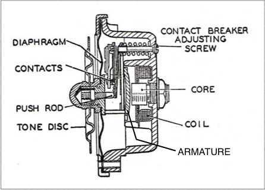
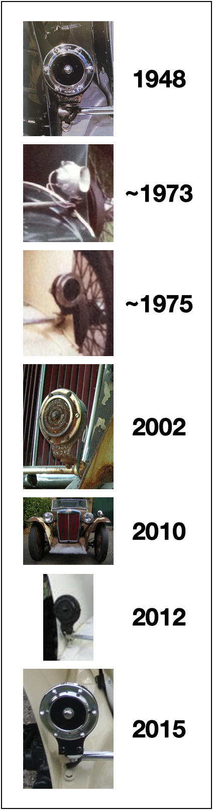
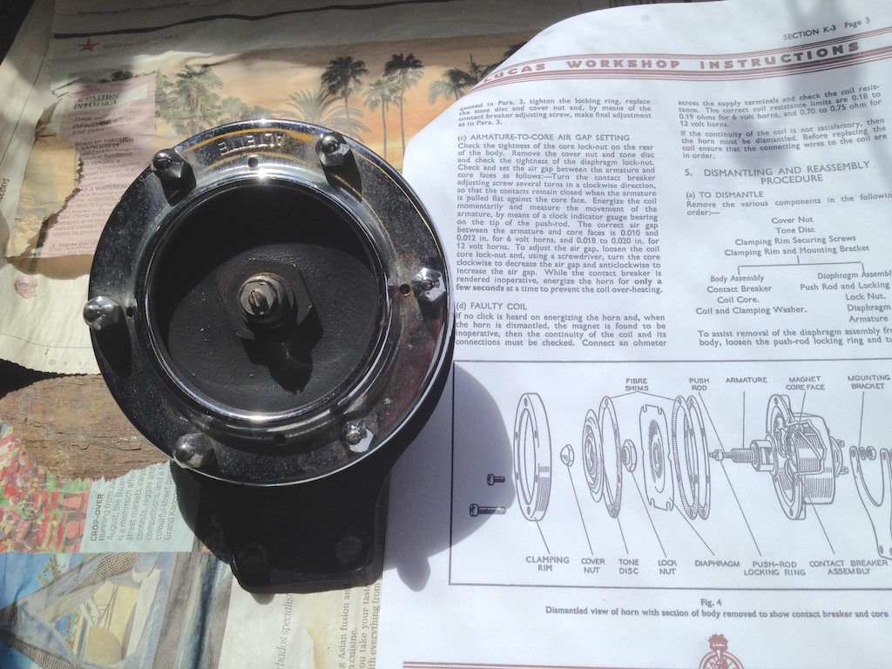
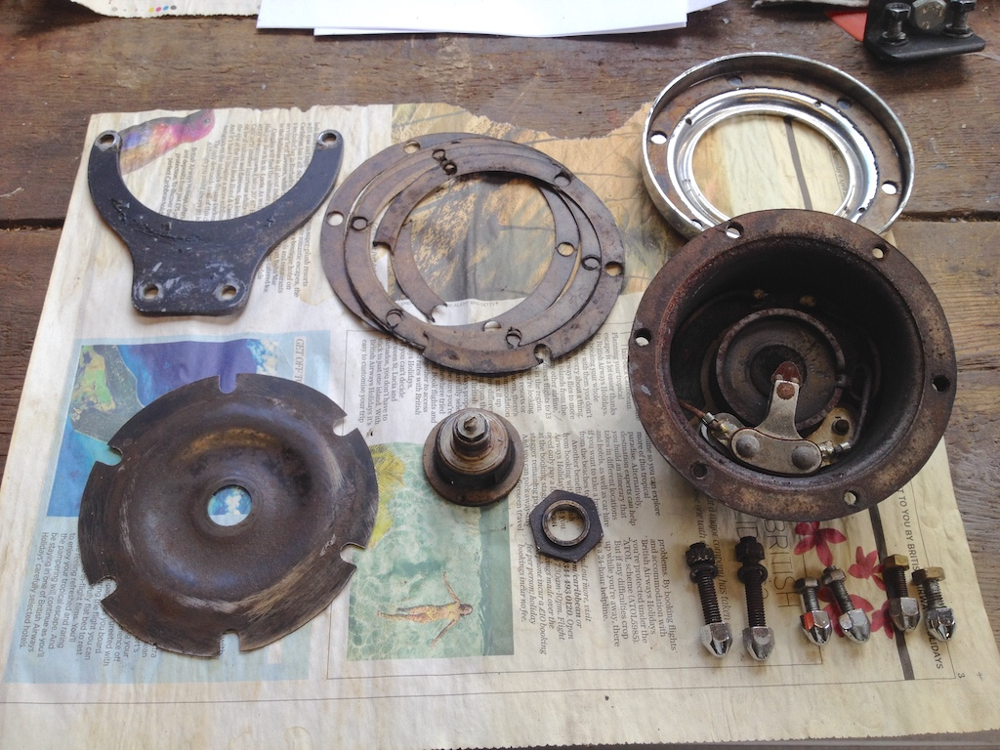
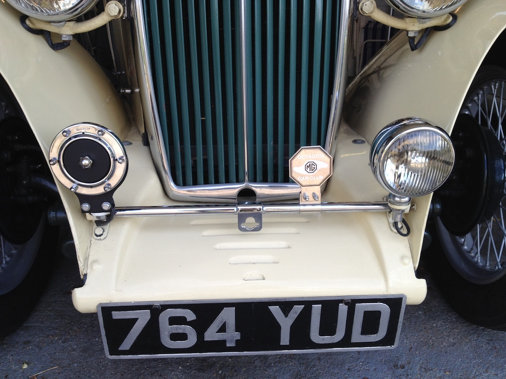
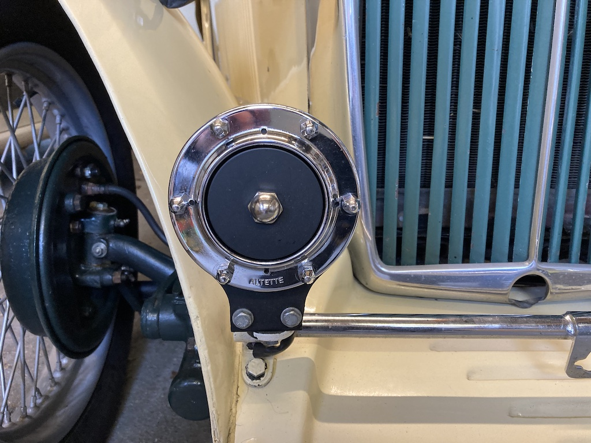

The MG TA, TB and TC all have a single Lucas Altette horn on the badge bar at the front. Apparently the TC has model number HF 1234. However, when I bought TC4985 in 2015, although it had a horn on the badge bar, it didn't work. The previous owner had fitted a plastic horn under the bonnet so that the car was legal and one of the wires from the Altette horn was disconnected from the terminal on the control box.
During the Covid-19 'lockdown' I had finished overhauling the brakes, including replacing the fluid, and dismantled the top of the carburetters so as to adjust the fuel level in the float chambers. Trying to get the horn working had been on my list since 2015, but I didn't know if the horn could be repaired or if it was destined to be just an ornament. So I thought it was an opportunity to see what I could do.
With the exception of air horns and klaxons, most car horns work in the same way, by vibrating a metal disc. With reference to the diagram (taken from the 1953 Lucas workshop manual), when you press the horn-push, the current passing through the coil induces a magnetic field in the core, which pulls the armature towards it, distorting the diaphragm. As the armature moves, it opens the points, cutting off the current, collapsing the magnetic field and allowing the diaphragm to spring back. Whilst the horn-push is closed, this movement of the diaphragm is repeated at a frequency that makes a loud noise. Although still referred to as a horn, the one on the TC does not have the spiral exponential horn shape that is used to try to match the acoustical impedance of the diaphragm with open air; just a tone disc in an attempt to make the sound a little less harsh.
The horn on TC4985 is clearly not a model HF 1234, since the coil is a push fit into the body casting rather than being bolted in and the tone disc is a flat plate rather than a wavy one. Nevertheless, it is similar enough to understand how it is put together.
However, from photographic evidence it is clear that the horn on TC4985 has changed over the years. When the car was built the horn looked very similar to how it does now, but the chrome ring had the word 'LUCAS' stamped into the top and 'Altette' at the bottom. The current adornment only has 'Altette' at the top. I know that in the early 1970s an ex-pat Englishman in Connecticut rebuilt the car from a set of bits. He originally painted the car green and fixed a device to the badge bar that sported a horn. Later he repainted the car cream and had changed the horn to something more like the original.
In 2002 another US citizen put the car in a shed for later restoration, but instead he sold it to a dealer in Sussex in 2010. It seems that the US gentleman was a bit of a wheeler dealer, selling car parts through online forums. Clearly between him putting the car in the shed and it coming to the UK the horn (and the whole badge bar) has disappeared! By 2010 the floorboard and seats had also disappeared, but more probably through rot.
The dealer sold the wreck on to a 73 year-old in Peacehaven. He spent three years restoring the car and we can see that it then had a badge bar and a horn, although it appears to be completely black. Beneath the black paint could be the current horn. The person in Essex from whom I bought the car (it had gone from Peacehaven to Essex via a dealer in Wales) tried to bring everything back to a more original state, but as I said at the start, the horn did not work.
However, you might notice from the photo that the tone disc and the domed chrome nut are missing. From earlier photos of TC4985, such as one taken on the lawns at the end of the 2016 South Downs Run, the tone disc and domed nut are present. Somewhere on my journeys in the car they had both fallen off!
With the horn off the car, the first activity was to dismantle it, so that I could check the continuity of the coil. However, that was easier said than done. According to Taff (more about him later) the diaphragm and armature assembly can be manoeuvred out without separating them. But mine would not come out, no matter how much I wiggled it around. The nut holding the armature through the centre of the diaphragm didn't want to shift and it took a large socket and a heavy hammer to free it! But at least now I had the horn, or what was left of it, in pieces. Putting some paper between the points I was able to measure the resistance of the coil. Luckily the resistance was low enough to confirm that the coil was still a continuous piece of wire.
As you might imagine, you can't nip down to Halfords to buy spare parts for this vintage of horn. This is where 'Taff the Horn' enters the story. An article in an online magazine on T-Types mentioned his name, which isn't Taff, but he does live in Wales. A quick search found his somewhat unstructured web site and I found that he restores a range of horns and supplies parts. He is also liberal with advice, which is very useful, but sometimes difficult to interpret. He doesn't really bother with punctuation. So I ordered a new tone disc and domed nut and a collection of shims. You can see the remains of the old shims in the photo. They fit between the diaphragm and the body of the horn and allow you to adjust the air gap between the armature and the core. According to the Lucas instruction manual that gap should be between 18 and 20 thou. So, without any shims and the armature resting on the core, I measured the gap between the diaphragm and the body and added 19 thou. Then put enough shims together to make about that thickness. Another shim goes between the diaphragm and the retaining rim. The diaphragm is then held between the shims, which have been soaked in grease to stop them shrinking, and is not touched by the bolts. Hopefully this allows the diaphragm to 'ring.' I did find that a little judicious filing of the armature rim allowed me to manoeuvre the assembled diaphragm and armature into (and out of) the body.
Cleaning the points allowed them to transmit electricity so I assembled the horn, just finger tight, and adjusted the push rod, which presses on to the points and so determines when they open. I then connected the positive wire to one terminal and touched the negative wire on the other. I jumped as the horn burst into life!
After cleaning the parts I primed and spray painted them in matt black before finally assembling the pieces and tightening the rim bolts. I've not measured it, but the current draw is typically 4 Amps. The horn now emits a raucous collection of frequencies around 400 Hz as measured on a phone app. Horns of this type are nowadays used in pairs, one with a frequency range of 420–440 Hz and the other 340–370 Hz (approximately G♯4–A4 and F4–F♯4; notes in the 4th octave of the human hearing range) to give a more melodic and audible sound.
I mentioned that the original horn had 'Lucas' on the top of the chrome rim and 'Altette' at the bottom, whereas the rim on my horn only has 'Altette'. In the final photo you may just be able to notice that the word Altette is at the top of the horn, but the text is upside down! I think it will stay that way, at least for a while.
After getting the horn to work at the beginning of July 2020 I have been testing it periodically, since I have never actually used it in anger. On Sunday 27th February 2022 I took the TC for a run and discovered that the horn was not working! Putting a meter across its terminals indicated that there was an open circuit, so I removed the horn so as to dismantle it to check the continuity of the coil.
Luckily all the wiring was intact and so it seemed that either the points had corroded (and so were not passing current) or the points were open whereas they should be just closed in their idle state. So I cleaned the points with a piece of thin card and then reassembled the horn (only finger tight). With the meter across the terminals I could adjust it so that the points were just closed. And it worked. However, I had to repeatedly adjust it as I tightened the bolts around the rim. As you might be able to see, this time I put the rim on the right way up.
© David James 2020 Last updated: 1st March 2022